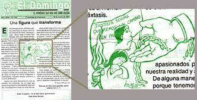
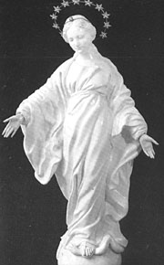

Sta. Teresita:
< 14 >
8 de agosto de 1897. Teresa, agoniza en la enfermería, cuidada por Paulina. Cuando María, su hermana mayor entra a visitarla la ve mirando el cielo por la ventana, y le dice «Con cuánto amor miras el cielo!...». Teresa en esos momentos no podía hablar, y sólo le sonrió; pero más tarde le confió a Paulina:
- «
Ella cree que miraba el firmamento pensando
en "el cielo verdadero". Pero no es así;
es simplemente porque admiro el cielo material.
El otro está cada vez más cerrado para mí. [1]
Pero inmediantamente me dije a mí misma, con una gran paz:
Sí, es muy cierto que miro al cielo por amor; sí, lo miro por amor a Dios, pues, desde mi ofrenda [2], todo lo que hago, mis gestos, mis miradas, todo lo hago por amor.»
[1] Durante su último año y medio de vida, Teresa
vivió en la oscuridad de la fe, tentada a descreer de
la vida eterna. Más de esto, otro día.
[2] Se trata del famoso "Acto de ofrenda al amor misericordioso"
que Teresita compuso en 1895. Más de esto ... otro día.
Deploraba una vez el adjetivo despectivo (insulto) yanqui "loser" (= perdedor) ; y lo seguiré deplorando.
Por acá, anda dando vueltas desde hace unos años (cuántos años ? y es cosa argentina ? no sé...) un (des)calificativo mucho más simpático y certero: amargo.
Es de origen futbolero, creo; los de X son amargos expresa el repudio ante la poca alegría, entusiasmo, pasión, que tendrían los del equipo contrario. También aparece en el ambiente "villero", y en general, en el habla cotidiana de Buenos Aires.
Con todos los peros que pueda haber, no me disgusta nada que ese adjetivo se use como insulto. Después de todo, el no tener esa alegría de vivir, (y de aguantar) merece el repudio social.... Mucho más que el de ser un "perdedor", yo diría....
Sta. Teresita:
< 13 >
-
«Qué felices somos de saber reírnos de todo ...!
Sí, sí..., y en esto no hay peros... »
(de Teresita a su hermana Paulina, tras una broma tonta a cuenta del tamaño de su nariz... febrero 1897, Teresa ya estaba enferma).
Castellani cuenta el caso (cito de memoria) de un cura alemán, muy viejo... estaba agonizando pero le costaba hacerse a la idea de que "había que despedirse". Sus compañeros trataban de infundirle resignación, para que se dispusiera a una muerte cristiana; le hablaban de conformarse a la voluntad de Dios, y de que todos somos mortales, y de ....
- Sí, sí -respondía el viejo, a regañadientes- yo me conformo a la voluntad de Dios; pero, bueno... si Dios quisiera dejarme un tiempo más ... acá hay cuerpo para tirar muchos años...
- Pero, ¿para qué le importa tanto poder vivir unos años más ?
- Para ver en qué termina todo esto !
Se cuenta del niño que se extraña de que el mundo
haya existido antes que él naciera (para qué ?);
para muchos, lo duro es aceptar que seguirá existiendo ...
No es el caso de los progresistas, desde ya.
Pero para los que ven la historia
del hombre como una obra que
-ante los ojos de Dios, al menos- tiene
un sentido;
para los que -como Bloy-
tienen una infinita sed de justicia, de bien y de belleza,
y saben -creen- que eso se cumplirá, pero no por
las obras de los hombres;
para los que tienen demasiadas
ansias por comprender y presenciar -que es más o menos lo mismo-
el Apocalipsis (como el mismo Castellani)...
es difícil aceptar que todo eso no se resolverá en nuestra
vida, que la función sigue igual sin nosotros,
que no somos protagonistas -ni siquiera espectadores-
del desenlace
y que Dios parece tener semejante
paciencia (por no decir impasibilidad) ...
Hoy se me ocurre ligar esto a la muerte de San José.
Uno no puede saber cómo fueron las cosas, y menos
qué pasaba en su cabeza y su corazón;
y qué sabía...
Un católico puede creer, al menos, que
José tuvo una misión especialísima que cumplir
en la historia de la salvación (hacer de padre
de Jesús... cosa que da vértigo imaginar),
y que la cumplió con una perfección
parejamente especial. En la humildad,
la pequeñez y el silencio (no sólo ante nosotros -lectores
de los evangelios- sino tal vez ante su esposa y su hijo).
Y muere -según se cree- cuando Jesús tenía cerca
de treinta años y "no había hecho nada"... Muerte
superprivilegiada, seguro; pero también es cierto
que pocos habrán trabajado tan bien y
habrán quedado tan a oscuras respecto del fruto
de su misión.
Patrono de la iglesia; y ejemplo, diría, para
los impacientes que no soportamos la paciencia de Dios,
los que nos agitamos demasiado (y hablamos demasiado)
para aclarar el sentido la historia,
los que a veces creemos poder adelantar el triunfo
del bien, con herramientas que nunca se encontrarán
en la carpintería de José.
en tu casa despierto y te bendigo
me alzo cansado y rezongando sigo
un día más de dolorosa vía.
Sobre la calle en polvo el mal postigo
abro y mi vista adormilada espía
el campo ruin, la aurora sucia, el día
torvo y el ventarrón que azota el trigo.
Aherrojada no visiblemente
mi alma en obra servil, sueño demente
y esperanza mayor que la razón
te mira, oh santo artífice filántropo
que no verá triunfar al rey Teántropo
su hijo, su trabajo y su pasión.
Leonardo Castellani
Vísperas de la fiesta de San José.
La página es de la EWTN; todo bien... salvo la (re)traducción
de las palabras de Santa Teresa de Jesús:
Yo no conozco persona que le haya rezado con fe y perseverancia a San José, y que no se haya vuelto más virtuosa y más progresista en santidad.
"...
Este ...
Lo que dice Teresa es:
-
«Querría yo persuadir a todos fuesen devotos de este glorioso Santo,
por la gran experiencia que tengo de los bienes que alcanza de
Dios. No he conocido persona que de veras le sea devota y haga
particulares servicios, que no la vea más aprovechada en la virtud;
porque aprovecha en gran manera a las almas que a él se
encomiendan. Paréceme ha algunosaños que cada año en su día le
pido una cosa, y siempre la veo cumplida. Si va algo torcida la
petición, él la endereza para más bien mío.»
Sta. Teresita:
< 12 >
La gracia de la Navidad de 1886. Adolescencia (14 años)
-
«Aquella noche de luz comenzó el tercer período de mi
vida, el más hermoso de todos, el más lleno de gracias del cielo»
Ms A, Cap 5)
En la navidad de 1886 Teresa tiene una especie de conversión en su carácter -entonces demasiado aniñado-. La circunstancia y el hecho parece casi trivial, pero seguramente Teresa no exagera su importancia:
-
Era necesario que Dios hiciera un pequeño milagro para hacerme crecer en un momento, y ese milagro lo hizo el día inolvidable de Navidad. En esa noche luminosa que esclarece las delicias de la Santísima Trinidad, Jesús, el dulce niñito recién nacido, cambió la noche de mi alma en torrentes de luz... En esta noche, en la que él se hizo débil y doliente por mi amor, me hizo a mí fuerte y valerosa; me revistió de sus armas, y desde aquella noche bendita ya no conocí la derrota en ningún combate, sino que, al contrario, fui de victoria en victoria y comencé, por así decirlo, "una carrera de gigante ".
Se secó la fuente de mis lágrimas, y en adelante ya no volvió a abrirse sino muy raras veces y con gran dificultad, lo cual justificó estas palabras que un día me habían dicho: "Lloras tanto en la niñez, que más tarde no tendrás ya lágrimas que derramar..."
Fue el 25 de diciembre de 1886 cuando recibí la gracia de salir de la niñez; en una palabra, la gracia de mi total conversión.
...
Felizmente, era un hermosa realidad: ¡Teresita había vuelto a encontrar la fortaleza de ánimo que había perdido a los cuatro años y medio, y la conservaría ya para siempre...!
Aquella noche de luz comenzó el tercer período de mi vida, el más hermoso de todos, el más lleno de gracias del cielo...
Y, sobre todo, Teresa decide su vocación: quiere entrar
de inmediato al Carmelo. En mayo, se lo comunica al padre,
que acepta (poco después empezarán los síntomas de su
enfermedad). En octubre, logra -venciendo una oposición
inicial- la aprobación de su tío, que ejercía de tutor.
Igual, Teresa es demasiado joven; varios se oponen, entre ellos
el superior del Carmelo; y empieza la guerra
«a punta de espada». Acuden al obispo
que no se decide (es para esta entrevista que Teresa
se peina con rodete, para aparentar más edad).
Deciden entonces viajar a Roma en una
peregrinación con la esperanza
de hablar con el Papa;
y allá parten, el padre, Teresa y Celina, en noviembre de 1887.
Teresa logra -pasando por encima del protocolo-
hablarle al Papa (León XIII); con las manos sobre sus rodillas,
le ruega permiso para entrar al Carmelo a los 15 años;
el Papa se limita a decirle: «haz lo que te digan tus superiores...
entrarás si Dios quiere». Fracaso.
Vuelven a Francia; recién a fin de año llegarán las noticias
del obispo... dando su autorización. Pero ahora se le posterga
la entrada por la Cuaresma: hay que esperar hasta Pascua.
De todas maneras, y aunque la espera se le hace dura, se ha salido con la suya: entrará al Carmelo -como "postulante"- a los quince años, cosa bastante rara...
Anduve el domingo por una parroquia distinta, y me reencontré con esas hojitas ("El Domingo", editorial San Pablo) que distribuyen con las lecturas de la misa y comentarios....
Lo de tener un texto para seguir las lecturas, en estos tiempos tan poco "orales" (qué pocos curas saben hablar!) no me parece nada mal .
Pero el resto... ay, esa retórica progresista, esa izquierda argentina tan boba, tan estéril y tan autocomplaciente como siempre ...
Era el domingo de la Transfiguración. Los comentarios del periódico, siempre del mismo palo: el "transformar la realidad", el "acá y ahora", el "construir el reino" , el activismo, la inmanencia, etc:
«no es el momento de quedarse en ese éxtasis; es tiempo de trabajar para anunciar y lograr que el Reino de Dios sea posible entre los habitantes de la tierra»
«El Reino de Dios no llega de forma milagrosa o instantánea, requiere tiempo, esfuerzo y mucha dedicación»
Y el digno remate de la nota:
«... y cómo es ahora la imagen que tenemos de Jesús? ¿Nos atrae tanto que seríamos capaces de querer armar "un campamento" con él, como Pedro, para ir después a transformar el mundo ?»
buen ejemplo de estas exégesis fallutas e interesadas,  llevada al extremo del ridículo; no hace falta mucha inteligencia exegética (sólo un mínimo de honestidad intelectual) para ver que eso no tiene nada que ver con la experiencia de Pedro... No pega ni con... nada
Pero lo más grande es la ilustración, que se las arregla para meter -a cuento de no sé qué- toda la inconografía de la mística "proletaria" clásica: unas cadenas rotas, hombres que levantan la cabeza con dignidad y mujeres pobres que acunan a sus hijos (la clase proletaria no tiene pecado original, como se ve), una pancarta que dice "Justicia social. Queremos un cambio en paz", (en estos días los devotos del comandante Guevara aparecen más pacifistas que Gandhi, ya se sabe) y ... unas cubiertas de auto en llamas!... ah! resonancias de pueblada, piquetes, revolución... ah! eso es éxtasis y no los de santa Teresa!!
Y eso vendría a ser el cristianismo ... según San Pablo ? No, según la editorial San Pablo; que no es lo mismo, le garanto.
PD: El epígrafe de la hojita, a modo de slogan es : "El periódico que nos une como Iglesia". Sí, ya veo....
Veo que Praise of glory, (A catholic page for lovers, el sitio de Gerard), además de mucho material interesante -y con muchas afinidades conmigo- contiene un capítulo del libro de von Balthasar sobre Santa Teresita ... (en inglés).
Yo lo tengo -en papel- en esta edición española.
Vía Flos Carmeli:
Han puesto una versión online (en inglés) de A miscellany of men, una colección de ensayos -polémicos y sobre temas "sociales" por decirlo así...- de G. K. Chesterton.
Chesterton en su más pura expresión. Me dan ganas de traducir, cosas como The angry author , The sectarian of society , The voter and the two voices y tantos otros...
-
Don't use secondary words as primary words. “Happiness” (let us say) is a primary word. You know when you have the thing, and you jolly well know when you haven't. “Progress” is a secondary word; it means the degree of one's approach to happiness, or to some such solid ideal. But modern controversies constantly turn on asking, “Does Happiness help Progress?”
. . .
The democracy has a right to answer questions, but it has no right to ask them. It is still the political aristocracy that asks the questions. And we shall not be unreasonably cynical if we suppose that the political aristocracy will always be rather careful what questions it asks. And if the dangerous comfort and self-flattery of modern England continues much longer there will be less democratic value in an English election than in a Roman saturnalia of slaves. For the powerful class will choose two courses of action, both of them safe for itself, and then give the democracy the gratification of taking one course or the other. The lord will take two things so much alike that he would not mind choosing from them blindfold—and then for a great jest he will allow the slaves to choose.
Sta. Teresita:
< 11 >
-
Madrecita querida, todo el bien que has hecho a mi alma,
a Jesús se lo has hecho, pues él dijo
«Lo que hicieron al más pequeño de mis hermanos, a mí
me lo han hecho...» Y el más pequeño soy yo!
Sta. Teresita:
< 10 >
Infancia II (10-13 años) [*]
Después de su enfermedad, siguen tres años y medio (junio 1883-diciembre 1886)
de crecimiento difícil, que corresponden al Capítulo 4 de su Manuscrito A.
Su primera comunión y confirmación, a los 11 años, señalan un tiempo
de devoción y gracias; ya en ese tiempo Teresita suele juntar flores
para el niño Jesús, y "perfumarlas" con oraciones y "prácticas",
y contabilizar todo en un cuaderno... Años después,
el simbolismo de la flor que se deshoja será reasumido
(con la propia vida de Teresa) y purificado de los residuos
de la "piedad burguesa" de su medio.
Pero éstos son años con más sombras que luces:
-
Imposible decir lo que sufrí durante un año y medio...
Todos mis pensamientos y mis acciones, aun los más sencillos,
se me convertían en motivo de turbación. La única forma de
recobrar la paz era contárselo a María, lo cual me costaba mucho,
pues me creía obligada a decirle hasta los
pensamientos extravagantes que tenía acerca de ella misma.
En cuanto soltaba mi carga, disfrutaba por un momento de paz;
pero esa paz pasaba como un relámpago, y enseguida volvía a comenzar mi martirio.
Busca fuerzas en la oración, y se encomienda a sus hermanitos muertos; y en noviembre siente que ha recobrado la paz y se ha liberado de los escúpulos. Pero recién se desprenderá de su hipersensibilidad de niña llorona en la noche de Navidad.
(continuará)
En mis tiempos, y en mis pagos, se usaban los Rasti (los Mil ladrillos no podían competir, vamos); por allá el Lego .
Acá hay un delirante que se hizo toda la Biblia en Lego.
Son más de 1300 escenas. Del Edén, del arca de Noé, la prueba de Abraham, el paso del Mar Rojo... etc, etc...
Sta. Teresita:
< 9 >
 Como decíamos ayer, el "milagro" de la curación de Teresa a los diez años, por la sonrisa de la Virgen, tuvo su ambigüedad y su cuota de amargura. Hans Urs von Balthasar adjudica al incidente uno de los fallos en la formación de Teresa que sería causa de algunas "sombras" en el cumplimiento de su misión.
La cosa fue que, tras la visión y curación,
y contradiciendo su propio propósito inicial
(«La Santísima Virgen, pensé, me ha sonreído!
¡Qué feliz soy! Sí, pero
no se lo diré nunca a nadie,
porque entonces desaparecería mi felicidad. » [*])
Teresa lo cuenta a su hermana María -que sospechaba algo así-;
y se enteran las monjas del convento (donde estaba Paulina, y donde
María ya planeaba entrar); cuando poco después Teresa
visita el convento, las monjas la atosigan a preguntas...
Al parecer Teresa, "visualmente", no ha visto más que la
imagen de "La Virgen de la Sonrisa" que estaba
en su habitación; es en esa imagen que Teresa
ve aparecer a la verdadera Virgen y sonreirle...
No es lo que la imaginería monjil espera; ellas quieren
una "visión visual", y lo de Teresa las desilusiona y,
acaso, sospechan que "en realidad, no ha visto nada",
que es sólo una imaginación ... vanidosa, en el peor
de los casos. Esta profanación humilla a Teresa,
y ella misma llega a dudar...
-
Vi también a otras hermanas, y delante de ellas
me preguntaron por la gracia que había recibido,
y [María] me preguntó si la Santísima Virgen llevaba al
Niño Jesús, y si había mucha luz, etc.
Todas estas preguntas me turbaron y me hicieron sufrir. Yo no podía decir más que una cosa: «La Santísima Virgen me había parecido muy hermosa..., y la había visto sonreírme. Lo único que me había impresionado era su rostro. »
Por eso, al ver que las carmelitas se imaginaban otra cosa muy distinta (mis sufrimientos del alma respecto a mi enfermedad ya había comenzado), me imaginé haber mentido...
Seguramente, si hubiera guardado mi secreto, habría conservado también mi felicidad. Pero la Santísima Virgen permitió este tormento para bien de mi alma. Sin él, tal vez hubiera tenido algún pensamiento de vanidad, mientras que, tocándome en suerte la humillación, no podía mirarme a mí misma sin un sentimiento de profundo horror...
¡Sólo en el cielo podré decir cuánto sufrí...!
(Ms. A)
"El caballo con alas" es un cuento de ... Bellocastellani. En realidad, es de Leonardo Castellani (del libro "Martita Ofelia y otros cuentos de fantasmas") pero es una versión muy libre de un cuento de Belloc. Curiosidad literaria que yo descubrí de casualidad; he leído poco de Belloc, y este relato -raro y atípico- que encontré en un libro "Selected Essays" (Penguin Books) parece muy poco conocido -al punto que en Internet no encontré ni siquiera el título. Así que quizás yo sea el único en el mundo en saber esto (Castellani no dice nada) ... y en importarle. Bueh...
Pero no es por eso que se me dio por ponerlo acá,
sino porque... porque sí, vamos (o por razones que acaso
entenderá
el que lo lea).
Acá va una selección; el cuento completo
está acá.
-
...
El caballo estaba plantado con las delanteras abiertas, oliendo el aire; el mío pastaba.
-Aquí -continuó el viejo- al otro lao, sobre esa lomita del ombú, fue la batalla del Cainil contra los indios: Rosas los arrojó a la laguna, simplemente. Aquí me cortaron la quijada de un lanzazo, por eso llevo barba. También estuve con San Martín...
-¿Y con Juan de Garay? -le pregunté.
-Llegué tarde. Ya se habían repartido todos los terrenos -respondió muy serio.
-¿No se llamará usted Rodrigo de Triana, por un acaso? ¿Con Colón no anduvo?
-Aquellos españoles -continuó él- eran bravos y bastante rudos; pero no era mala gente. Lástima los echaron demasiado pronto.
-Y fue San Martín el que los echó -le retruqué.
-No crea, amigo. Mucho antes comenzó la cosa. Cuándo, no se lo podré decir. Pero ahora ya eso es agua pasada, como la famosa "Reconquista" contra los moros, que fue cosa grande. Yo conocí al Cid Campeador. También a San Fernando Rey, que era así como yo más o menos de alzada y bastante feo el pobre.
-¿Usted trabaja aquí, en el Reposo?
-Trabajé -dijo-. Tuve que salir a causa de la malevosía de un comisario. Anduve con los indios un tiempo.
-¿Y ahora?
-No tengo ni una tapera -dijo-. No trabajo más. Enseño a la gente a vivir bien. Y gano carreras.
-¿Enseña a la gente a vivir sin trabajar?
-Vendo cantares -rezongó-. El oficio más excelente que hay en el mundo es hacer cantares; y el segundo, es cantarlos, con tal que sean buenos. Y además, doy buen ejemplo. Jesucristo no hizo otra cosa.
Sin darme cuenta me había puesto a discutir con un loco, que era gracioso. Entonces sonó un tiro de escopeta y un verdadero nubarrón de patos se alzó sobre el lugar y la laguna se pobló de gritos. Solamente entonces me percaté del extremo silencio que nos había rodeado...
[...]
-Sabe mucho usted para ser tropero- le dije-. Se ve que ha hecho de todo, hasta de mestrescuela, como todos nosotros. Pero ese cantar que está haciendo es contra la patria.
-¿Y de áhi? ¿Qué estaba haciendo usted, sentao en ese tronco cuando yo llegué? ¿No estaba maldiciendo la patria?
Me espantó, porque realmente no sé cómo lo pudo saber. El caballo estaba otra vez a su lado, y me miraba; y realmente tenía los ojos con malicia, un poco tristones.
-Yo maldigo lo que Ellos llaman "patria" -objeté- que está plagada de ignominia. Fíjese, me acaban de echar de mi cátedra y otro empleíto que tenía, y que cumplía. ¿No es una ignominia? Siete veces ya me han echado, que ellos llaman exonerado, y el primero que me echó fue el arzobispo de Buenos Aires; y eso, por un antojo.
-Bah -dijo él-, ésa no es una ignominia mayor. Más me han echao a mí; y del mundo me echarían si pudieran. Me han corrido de todas partes, de la Escuela, del Trabajo y de la Iglesia, como dijo el emperador ese que su merced antes mentó. Pero yo corro más que ellos. Gano todas las carreras. Diga que no juego por plata.
-¿Y usted cree que esto puede tener arreglo?
-Há'i tener -dijo con los ojos bajos, rayando el suelo con una bota-
há'i tener. Tiene que ver usté qué buena es la gente de aquí en el
fondo, cuando a uno lo entienden un poco. Malos deveras no debe haber
más que uno cada cinco o cada diez. Pero bueno del todo, la broma es
que no hay ninguno.
Yo recorro todo el país, al tranco nomás, sin
apuro, con este caballo; que cuando él quiere y yo no quiero, vuela. En
donde quiera encuentro alguno que quiera vivir bien, le enseño a bien
vivir, a veces solamente haciéndole que sí con la cabeza.
Ése há'i ser
el remedio. Cuando haya muchos que quieran vivir bien; claro que
algunos van a tener que morir ...
-A mí me han muerto -musité-. Yo me doy por muerto.
-Mejor -dijo él-. Así le voy a poder prestar el caballo; que lo que es el suyo, no sirve. De no estar usted desesperao, no se habría sentao aquí; y de no sentarse aquí, no se hubiera encontrao conmigo.
El poderoso silencio nos había envuelto de nuevo: ni soplo de viento, ni una hoja. El tiempo estaba tapado de espesos nubarrones. El animal blanco olía soplando la tormenta. Yo no sabía qué decir. El viejo loco se me imponía.
-Pero ¿por qué?... -balbucí-. Pero ¿cómo? ¿Y entonces?...
Me había puesto en turbación como un fantasma, si era real o irreal el viejo, no lo sé, pero si no era real, yo estaba más loco que él; porque patentemente lo veía a la luz espesa de la tarde fulva leonada.
-Estos tiempos son demasiado para mí -concluí-, ¿por qué tuve que nacer en este tiempo?
Y lo miré; el viejo estaba montado en pelo y yo no lo había visto montar. Las riendas arrastraban por el suelo y él estaba agarrado a la larga cuna; la cual partida pareja en dos parecía en crenchas plumosas mismamente como dos alas. El viejo tardó en contestar:
-Yo estuve -dijo- con Policarpo obispo de Esmirna, que fue un escritor
mediocre como vos... bien sabés, que ahora le dicen San Policarpo cada
26 de enero, porque hizo un milagro o dos después de morir, que en
realidad lo mataron, pero mucho pior que a vos...
Cuando el obispo andaba por la calle, porque caballo no tenía y auto
mucho menos, y veía venir un grupo de gente, y nianquesea un solo
gente, salía disparando a los gritos diciendo: "¿Dios mío, en qué
tiempo me has hecho nacer?". Y era obispo.
Yo no digo que no sean malos
estos tiempos, pero todos los tiempos han sido malos; y si éstos son
los piores, se aplica el refrán que dice: por lo más oscuro amanece;
porque todos los tiempos están a igual distancia de Dios. Porque tenés
que ganarte la vida haciendo copias a máquina con un solo dedo, ya te
das por muerto y condenado, y porque no te dejan acabar un libro y otro
libro que publicaste nadie le hizo caso, como si el mundo pudiera
salvarse con libros, que ya hay demasiao dellos.
¿Y Jesucristo qué
hizo? Mesas y arados y después cantares a su manera, a la manera de
aquel tiempo. En este tiempo hay máquinas de hacer versos, dicen, así
que Jesucristo se ahorra el trabajo; yo los hago a mano.
Pero quería
decirte esto: a vos en la escuela te enseñaron una punta de macanas
acerca deste país, las creíste -y a mí me pasó lo mesmo- y al llegar a
la madurez se te vino abajo el techo y hasta las paredes; así que ahora
te das el lujo de hacerte el desesperao y el crucificao. No es para
tanto.
-Me vas a decir seguro que el hombre puede vivir sin patria ...
-Patria provisoria tenemos ya basta los hombres solos.
Solos hay que andar en este tiempo si uno quiere andar mejor.
Cuesta al principio, pero se puede. Las langostas andan en mangas; pero
el pájaro cantor, solo.
No has conocido tu vocación, querías sacar
premios literarios y andar con el gaterío. Ahora ya sabés; y nunca es
tarde. ¡Sé más feliz que yo! -y alzó la voz hasta un grito en el gran
silencio.
Sin talonear, el caballo dio un brinco hacia la laguna. Di un grito, pero el caballo no se hundía.
Que me caiga muerto aquí mismo si miento, pero mismamente parecía que volaba. Se perdieron atrás del ombú, y yo mirando a ver si salían, en el cielo por un abra (o clarazón que le dicen) vi el lucero de la tarde.
Cuando les conté todo esto con precaución a dos vecinos, no tuve mayor éxito. Tengo que andar solo, porque la mayoría no creen; y los que creen, a lo mejor creen demasiado.